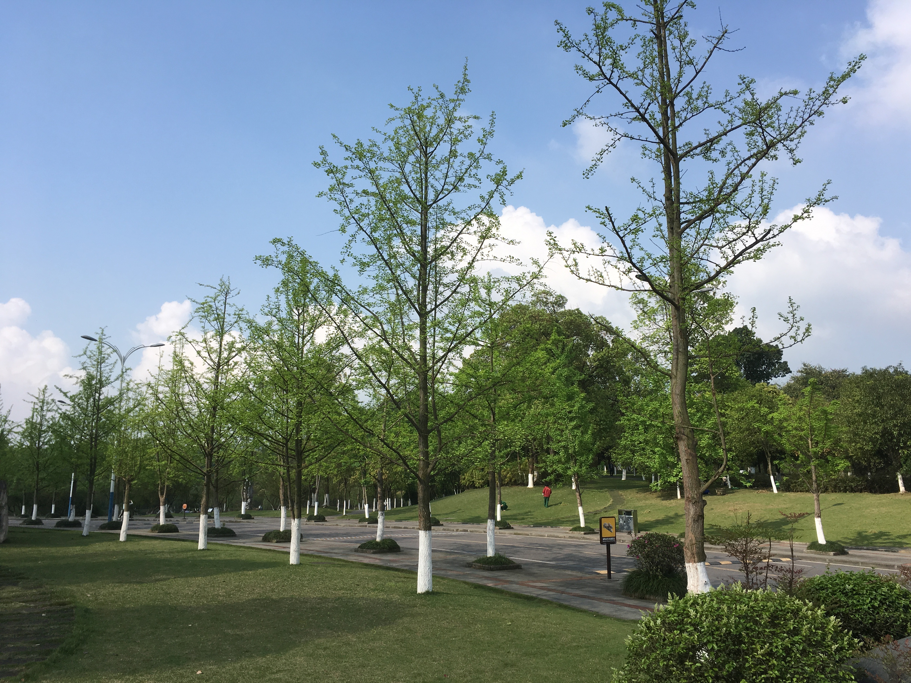

未完待续
银杏叶的前世今生
高三的时候，秋季，每次在食堂用完餐，总会绕路从那两棵银杏叶树下走回教室。银杏叶的金黄色总让人觉得很温暖，像是…向日葵，又或者是，那位葵光少年。
晴天，忍不住被它们吸引，又生怕自己把它们踩坏了，所以总是脚步放得很轻地走过去。可以闻到银杏叶的气息，嗯…是太阳的味道。
雨天，脚踩上去，啪嗒啪嗒地响。雨让它们腐烂在潮湿的泥土里，是来送它们离开的。又或者是将它们洗净，以最温暖的颜色。
恰逢一位友人十八岁生日，在写给他的信中，夹了两片银杏叶，漂洋过海，随之寄去。
去年秋季，CQU的银杏叶落满了整整两条大道，壮观极了，会让人充满斗志，觉得，秋天也是满怀希望的季节呢。
好几次想捡起一片银杏叶，把秋天的气息封存，结果等到自己再想去捡的时候，它们已经离开了呢,真是遗憾。
幸运的是，那位友人在我生日的时候，将高三那年的银杏叶又寄还于我٩( ˃̶͈̀௰˂̶͈́ )و可以说是非常幸运啦
想来也并不奇怪，高中母校银杏树的数量全然不敌大学，但是那时候的经历与感受，却重过太多。嗯…明白这只是人类的通病，回忆总感觉比现在的生活要美好，不过我想说，现在的生活也非常美好呢。
对了，CQU的银杏又快变成温暖的颜色了，欢迎来玩~

高中语文课上:”你们最向往的生活是怎样的生活？”
“现在的生活。因为它，刚刚好。”
准程序员的生活
唔…今天早上爬起来，完善了博客网页的部分功能。
经过了非常艰难的努力…终于将gitment的评论功能添加上了，但还有点小问题(不登录github帐号无法查看评论)。不过我已经非常满足啦。
添加了leancloud的文章阅读次数统计功能( > <虽然这是一个除了自己没人看的博客）
想起数据结构课上老师提到的那个悖论:一个由所有集合的组成集合，感觉可以默默记很久…虽然我觉得我更应该记住的是课本上的知识ORZ
All articles in this blog are licensed under CC BY-NC-SA 4.0 unless stating additionally.